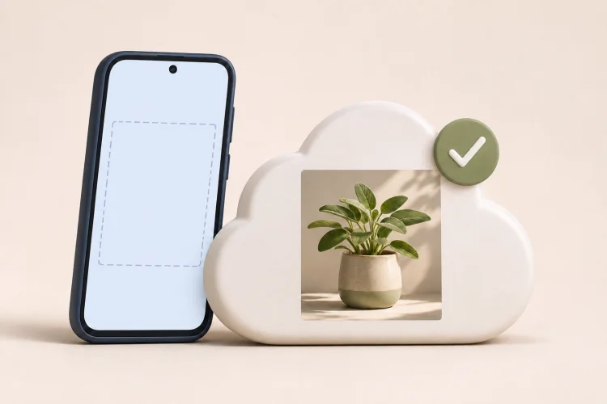
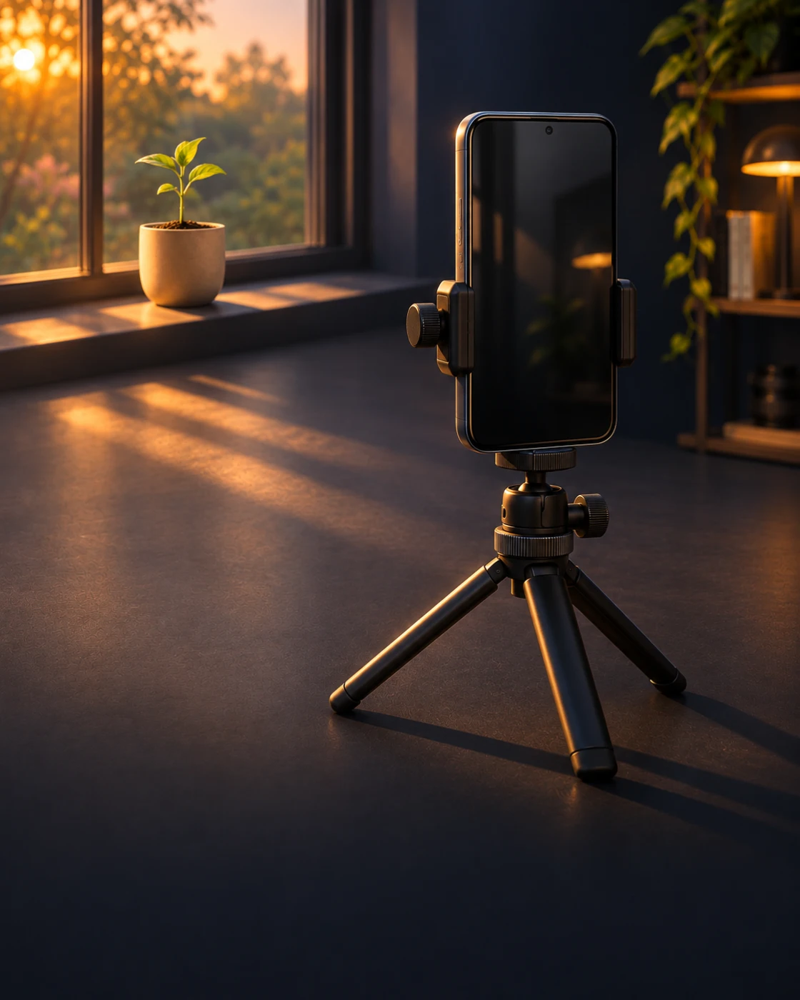
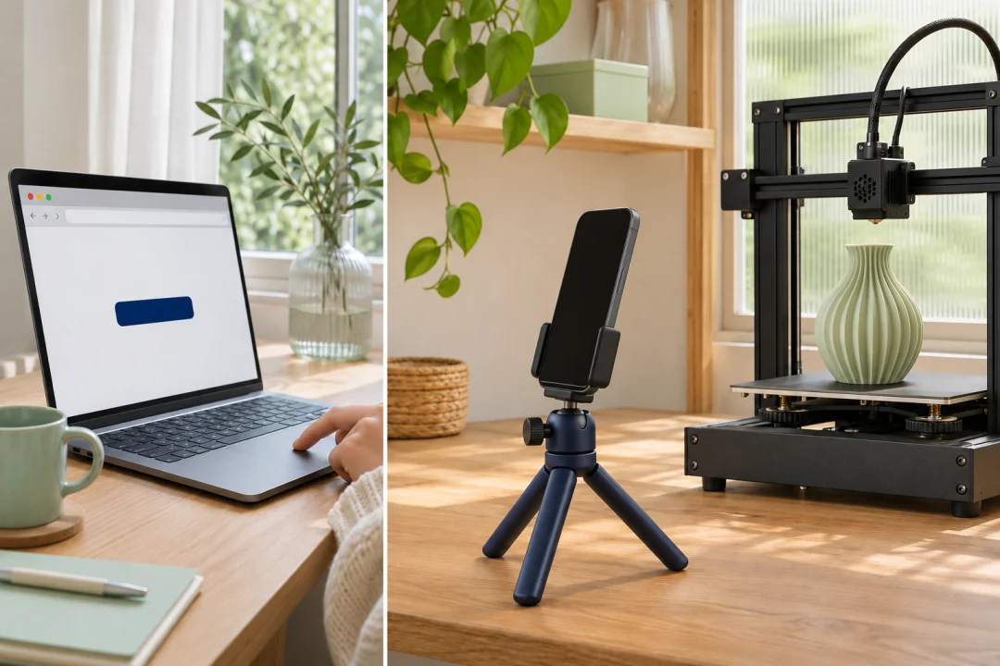
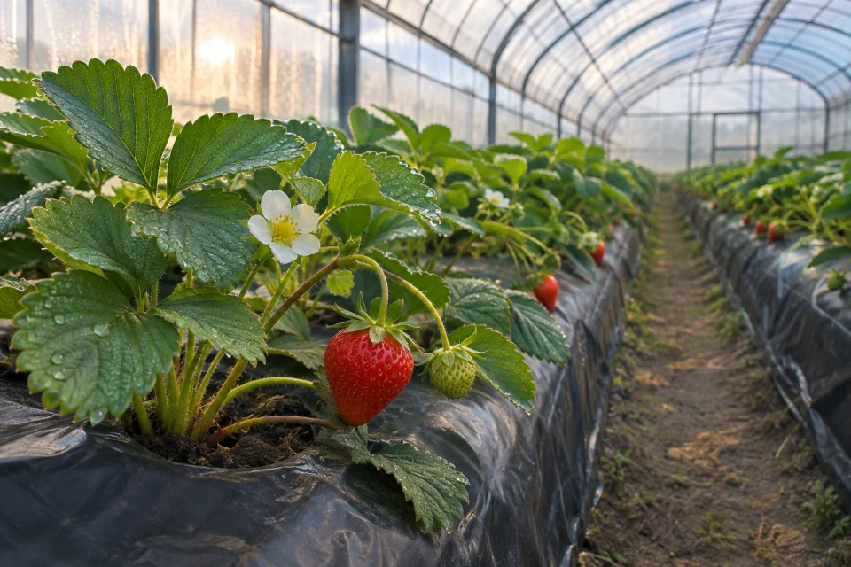
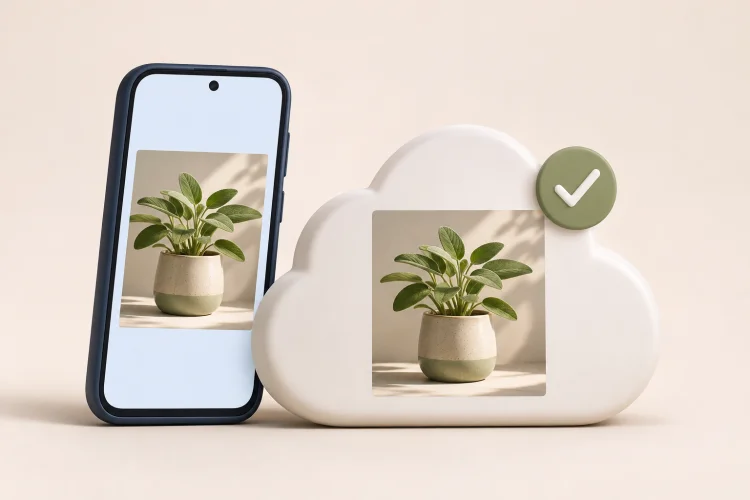
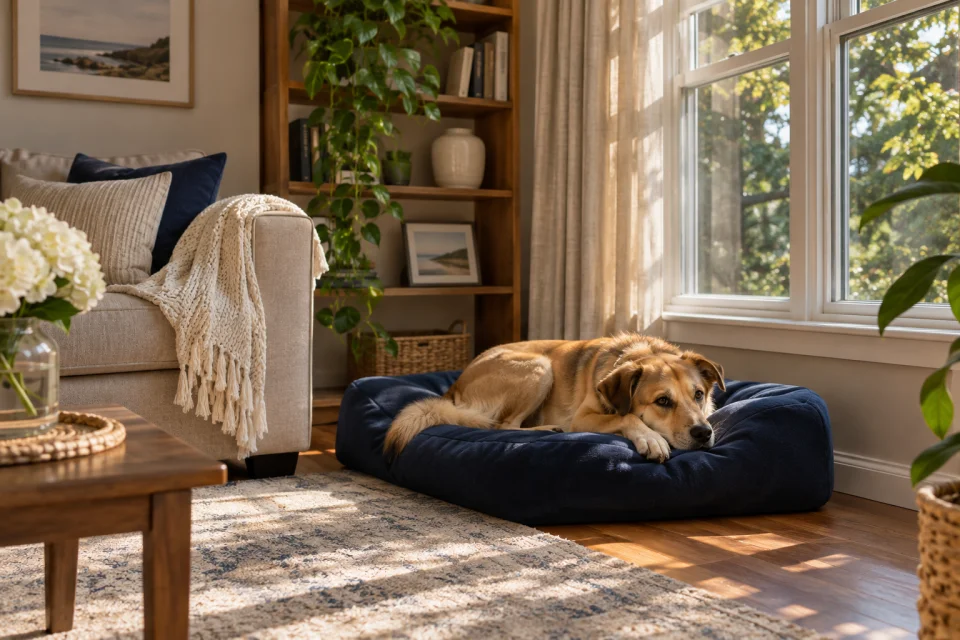
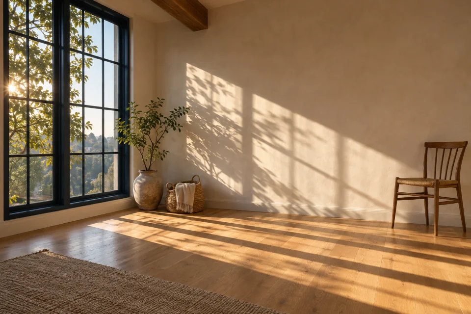
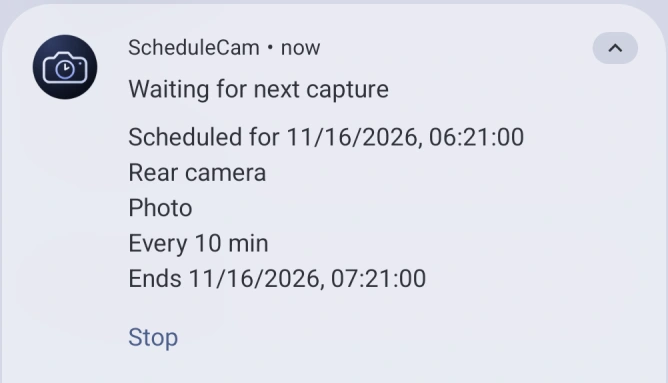

Drive only
ScheduleCam verifies the upload before removing the copy on your phone.
Scheduled camera for Android
Schedule Android photos and videos for the times you choose, even with the screen off or the phone locked. Choose device storage to keep home footage on your phone.
Remote shutter
Screen offWhile your phone is locked
Open ScheduleCam, aim the camera, and tap Schedule capture. If Android asks for camera, alarm, or notification permissions, allow them and tap Schedule capture again. Once the next capture appears, you can lock the device.
What affects capture timing?
Remote shutter
Take a photo or record a video from another device’s browser. On the camera phone, connect Google Drive, choose your camera settings, and tap Enable remote capture.
Keep the phone online. On the other device, sign in with the same Google Account and tap Capture now. Once the file uploads, open it in Drive.
Open remote shutter
Check the finished print in Google Drive once the photo uploads.
How it works
Pick up to 30 dates and times. Set three photos for different times of day, or schedule a single clip for a specific moment.
Set a start, an end, and an interval. The phone keeps the same framing as it takes a series of photos or video clips.
Set the lens, zoom, and resolution available on your phone. For video, choose a length from 1 to 10 minutes and decide whether to record audio.
Try a schedule in the browser preview. Change the mode, camera, or save destination, then tap Schedule capture to see what you set.

Automatic uploads
Connect your Google Account to upload new photos and videos automatically. Open the ScheduleCam folder on any device signed in to the same account.


ScheduleCam verifies the upload before removing the copy on your phone.

Keep your captures on your phone as well as in Google Drive.
While an upload is pending, ScheduleCam keeps a temporary copy on your phone so it can retry.
ScheduleCam and network cameras
Use the camera on your Android and choose an available lens, zoom, and resolution. A higher-resolution still gives you more pixels to crop when you want to inspect a leaf, a gauge, or a printed layer.
If an internet-accessible home camera feed concerns you, schedule just the moments you need and save the files on your Android. Google Drive is optional for scheduled capture.
A dedicated camera is a better fit for a live view, motion notifications, or infrared night vision. Features vary by model.
An 8 MP photo has about 3.9× as many pixels as a 1080p video frame. Available resolutions and image quality vary with the camera, lens, light, and settings.
Use cases

Scheduled photos
With your dog’s automatic lunch set for noon while you’re at work, frame their usual resting spot. Schedule photos at 12:10 and 12:30 p.m. to compare whether they’re resting there at the same points after lunch on different workdays.

Scheduled photos
While you’re at the office, leave a phone aimed at the wall where your desk will go. Compare 9 a.m., noon, and 3 p.m. photos to see when direct sun hits that spot during your usual workday.
Scheduled photos
If the tank should light up at 1 p.m. while you’re at work, schedule photos at 12:55 and 1:10 p.m. The pair shows whether the light was off before the change and on afterward.
If you revise the smart plug’s timer from work, use the remote shutter after the new switch-on time to check the light.
Daily photo
Before a trip, aim a phone at the tray under your houseplants. Take a photo each day at 7:30 a.m., 30 minutes after the drip timer starts, to compare how much runoff reaches the tray at the same point in each cycle.
Daily photo
When you start the day at another farm, schedule an 8 a.m. photo of the same strawberry cluster, just before the picking crew starts. Compare the berries each morning to decide whether that row is ready before assigning the crew.
Scheduled photos
While you’re working at another plot, frame the gauge at the far end of the irrigation line. Take one photo at 7:55 a.m. and another at 8:10, ten minutes into the scheduled run, to see whether water reached that end.
If the pump starts late and you get a start alert, tap Capture now ten minutes after the alert to get a comparable reading.
Scheduled photos
If the greenhouse is unattended after the morning rounds, aim the phone at a vent. Photograph it at 11:10 a.m. and 5:10 p.m., ten minutes after it should open and close, to check that it reached both positions.
Scheduled photos
With nobody at the field station overnight, aim a phone at the illuminated tank gauge. Photograph it at 1:55 a.m. and 2:35 a.m., just before and after the 2:00–2:30 refill, to see how much water was added.
Scheduled video
After installing a timer on a distant nursery tunnel, record a two-minute clip starting at 11:59 a.m. The clip covers the noon command and shows whether the screen crossed the full span or stopped partway.
Check your phone’s water-resistance rating and operating conditions. Use a sheltered spot away from rain, spray, and condensation. Google’s water-resistance guidance

Repeating photos
Start the print before heading to another site and schedule photos every 10 minutes from the start. Compare the same points in each run to see when a lifted corner first shows up.
If the printer reports that it has finished while you’re still away, use the remote shutter for a final photo of the part on the bed.
Repeating photos
When a test cures overnight in an empty lab, take photos at the start and every 30 minutes. Compare batches at the same elapsed times to see which coating formed bubbles first.
Daily photo
A site manager covering several renovations can schedule a 4:45 p.m. photo of the marked wall after the wiring crew leaves. Review what’s complete before the drywall crew arrives the next morning.
Scheduled photos
If you manage several branches, take photos at 6:55 and 7:10 p.m. at the shop that closes without an evening supervisor. Compare the two around the 7 p.m. timer to see which fixtures stayed on.
Scheduled photos
While you’re coordinating another venue and the door team is checking tickets, take photos of the queue area five minutes before doors open and ten minutes after. Compare how far the lines extend at each site to decide where to add a ticket scanner for the next session.
If doors open late, request a photo ten minutes after they actually open so you can compare the queues at the same point in each session.
Before you set up

The repeating photo schedule accepts whole minutes, starting at 1 minute. The initial setting is 10 minutes. When Battery Saver or Doze is active, ScheduleCam raises intervals below 15 minutes to 15 minutes. Timing can vary with the device and its power settings.
Choose Video and enable audio, then allow microphone access when prompted. For repeating video, choose an interval longer than the clip so there’s time for each recording to finish.
Choose Device to keep scheduled photos and videos on your Android without linking Google Drive. Active schedules can save locally while the phone is offline. If you link Drive, pending uploads retry when your connection returns. Browser-based remote capture requires a linked Drive account and an online camera phone.
Open Captures to view a photo or play a video on your phone. Use Save a copy to export a file from the app. You can also open any uploaded files in your ScheduleCam folder in Google Drive.
Tap Stop schedule in ScheduleCam or use the stop action in its notification. Clearing the schedule notification also stops the schedule. Start a new schedule after restarting your phone.
ScheduleCam skips that capture and reports the camera restriction in the app or notification. An active repeating schedule continues with its next available slot.
Availability
Requires Android 14 or later. The app follows your device language by default. You can also choose a language in the app.